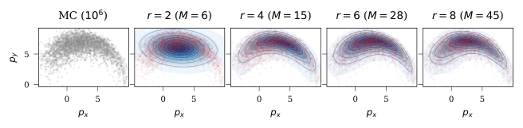

This lesson follows version 1 of The Score Kalman Filter. The paper combines score matching for polynomial exponential families with Stein moment identities. A density fit is a linear solve, while nonlinear prediction still involves moment ODE integration and finite closure. The three browser laboratories are independent scalar teaching examples. They expose the matrix fit, higher-moment closure and one measurement update. Their reference curves and input moments use quadrature, explicitly separated from the algebra being illustrated. They do not reproduce the authors’ full filter or benchmarks.
Fit coefficients so the represented density matches a set of moments.
Evaluating the partition function and its derivatives can require expensive integration.
SCORE MATCHING FIT
\[s_\lambda(x)=\nabla_x\log p_\lambda(x)\]
Fit the spatial derivative of the log density.
For polynomial features, its objective becomes quadratic in the coefficients. Moments provide every matrix entry.
Explanation
This is the direct conceptual continuation of the existing MEM-KF lesson. Maximum entropy and score matching use different objectives. They recover the same member when the supplied moments come from a density inside the assumed exponential family and the theorem’s regularity conditions hold. For a density outside that family, or approximate moments, the fitted parameters generally differ. Avoid describing SKF as a faster exact implementation of every MaxEnt fit.
Coefficients λ: convenient for the score and likelihood update.
The reported point estimate is the posterior mean from first moments.
Explanation
The state has dimension n. X is the drift vector field and h is the diffusion matrix, not the measurement function. g is the observation function in this lesson, with additive Gaussian observation noise for the conjugate update. The paper starts with given initial moments. It does not solve a general unknown-initial-pose problem. The estimator receives measurements, model parameters and an initial belief, rather than the subsequent true state. Algorithm 1 carries both m and λ.
Fix \(\lambda_{\mathbf0}=0\). The normalizer absorbs constants.
A PROPER SCALAR QUARTIC
\[V(x)=a x^4+b x^2-cx,\quad a>0\]
Positive a gives integrable tails.
When c = 0 and b < 0, two density modes occur at \(x=\pm\sqrt{-b/(2a)}\).
The mean can lie between the modes.
Explanation
A multi-index α=(α1,…,αn) represents the monomial product x1^α1 ⋯ xn^αn, and |α| is the total degree. The paper counts M=binomial(n+r,n) including the constant. The actual score fit omits the zero row and column, leaving M−1 parameters. A polynomial energy only defines a probability density if Z is finite. The scalar quartic example is globally normalizable on the real line because its leading coefficient is positive.
A positive score means the density increases as x increases locally.
No value of Z is needed to evaluate this field.
The score does not give a normalized density height by itself.
Explanation
The score here is ∇x log p(x), not the gradient of a parameter log-likelihood with respect to λ. Z depends on λ but is constant in x, so its spatial derivative is zero. In the paper’s convention Jφ has one row per state coordinate and one column per feature. Thus Jφ is n by (M−1) after dropping the constant feature. The resulting score has n components. No neural network training or diffusion-model sampler is required for this polynomial score fit.
Polynomial dynamics turn derivatives into moment lookups.
GENERATOR · EQ. (2)
\[H(x)=\tfrac12 h(x)h(x)^\top\]\[\mathcal A f=\nabla f\cdot X+\operatorname{Tr}(H\nabla^2f)\]
Drift moves the state. Diffusion spreads its uncertainty.
DYNKIN’S FORMULA · EQS. (3)–(4)
\[\frac{d}{dt}\mathbb E[f(x_t)]=\mathbb E[\mathcal A f(x_t)]\]\[\dot m_\alpha=\mathbb E[\mathcal A x^\alpha]\]
Apply the generator to each monomial, then replace monomials by their expectations.
Explanation
The exact generator identity is a continuous-time result under the required smoothness and integrability conditions. A finite implementation additionally chooses a moment budget, a closure for omitted moments and an ODE time integrator. Linear algebra in the density fit does not remove numerical ODE integration. For polynomial drift and diffusion, the right-hand side is a linear combination of moments, although it can involve moments of higher degree than those being propagated.
If the hierarchy increases degree, its missing moments require closure.
The budget alone does not guarantee stable closure.
Explanation
Eq. (5) gives the excess degree. dX is the maximum drift degree and dh is the maximum degree of entries of h. The diffusion tensor hhᵀ/2 can have degree 2dh. K=2r−2 is sufficient to assemble A, while b uses degree at most r−2. Degree r may identify a member of the family abstractly, but this particular quadratic fitting method requires more moments. The table is degree accounting only. In particular, an unrestricted nonzero cubic energy is not globally normalizable on Rn, as discussed later.
The Fisher-divergence formulation contains the unknown true score. Integration by parts rewrites it as an expectation of the model-score divergence and squared norm plus a parameter-independent constant. Since s=−Jφλ, the squared term produces λᵀAλ/2 and the divergence produces −bᵀλ. For polynomial features, every expectation is a moment lookup. The fit has a unique unconstrained minimizer if A is positive definite on the nonconstant features.
Omit the constant feature. Terms with zero derivative factors contribute zero.
SOLVE · EQ. (9)
\[\boxed{A(m)\lambda=b(m)}\]
1. Index the nonconstant monomials.
2. Fill A and b by moment lookup.
3. Solve and inspect conditioning.
Use a numerical factorization rather than explicitly forming an inverse.
Explanation
e_i is the multi-index with one in coordinate i and zeros elsewhere. The paper writes λ=A−1b to express the mathematical solution. A numerical implementation should use a stable factorization and explicitly diagnose rank and conditioning. The covariance-like Gram matrix need not be well-conditioned merely because it is positive definite in exact arithmetic. Approximate input moments can perturb it. Solving this system fits the score parameters, not the unknown physical state directly.
The next lab computes each entry from the current input moments.
Change the well depth and asymmetry. The fitted coefficients should recover
\[\lambda=[-c,b,0,a]^\top\]
Inspect \(\|A\lambda-b\|\) and the score curve.
Explanation
This is a direct specialization of Eq. (8) to n=1 and r=4. The b used as the quadratic energy coefficient in the teaching family is a scalar, whereas the bold or vector b in Aλ=b is the score-fit right-hand side. The lab labels the energy coefficient separately to avoid ambiguity. It generates a proper quartic density, computes its reference moments numerically, and solves the matrix system. Quadrature supplies the teaching input and plots. The matrix fit itself uses only those moments.
This laboratory implements the scalar score-matching system. Its numerical reference distribution is a globally proper quartic family. It demonstrates on-model recovery rather than claiming that score matching reproduces arbitrary moment targets exactly. The displayed residual checks the matrix equation. It does not certify a full nonlinear filtering algorithm.
Eq. (10) makes conditioning part of the error story.
Explanation
Theorem 1 assumes a true member of the polynomial exponential family in the interior of the natural parameter domain. Under the zero-constant convention and positive definiteness of A, the solution recovers its nonconstant coefficients. The perturbation expression is a local sensitivity statement, not an unconditional stability bound for a recursive filter. Inaccurate moments can yield a fitted score whose energy is not integrable. Appendix B.2 Remark 5 explicitly separates existence of an unconstrained score fit from existence of its normalized density.
Those moments cannot be determined by a finite lower-order list for every possible distribution.
SKF supplies them through its fitted score model.
Explanation
This is an original one-dimensional worked application of Eqs. (2)–(5), not a claim about the precise oscillator drift in the paper’s scaling experiment. Differentiate x^k twice and substitute X=x−x³ and h=σ. The result involves m_(k+2), giving excess degree two. For k=0 or k=1, derivative prefactors make the negative-degree term zero. This example connects the two higher moments in the next laboratory to a concrete prediction need.
Support, finite moments and boundary conditions matter.
Explanation
The identity is exact for a valid density with the stated score when the integrations and boundary cancellation are justified. On a bounded domain, ordinary monomial Stein tests can leave nonzero boundary terms unless the density or test function satisfies suitable conditions. On a manifold, the appropriate derivatives and measure must respect its geometry. SKF uses a finite selection of these relations as a model-based closure and for posterior recovery. This finite use inherits additional approximation choices.
In our family λ₃ = 0. A general quartic also uses the recovered m₇ here.
The next lab compares both results with reference moments from numerical integration.
Explanation
In one dimension Eq. (12) becomes Σ_j j λ_j m_(j+β−1)=β m_(β−1). Setting β=4 and β=5 gives the displayed recurrence. The first step only uses m0 through m6 and λ. The second step uses the just-computed m7. For this on-model quartic example, the recurrence agrees with the reference up to numerical integration and solve errors. In a filter, a fitted quartic is an approximation and closure error can accumulate. Dividing by a small λ4 also makes the recurrence sensitive.
The algebraic recurrence is exact for the proper quartic reference distribution. Numerical quadrature is used only to create input/reference moments and plotted curves. It is not called by the recurrence itself. The lab deliberately avoids a truncated posterior-recovery claim. It illustrates higher-layer closure with already-known lower moments, which is a different problem.
For larger excess degree, solve successive layers.
Overdetermined systems can require least squares. Rank and consistency are separate checks.
REUSE AND ACTIVE CLOSURE
Hold λ fixed across a prediction window and reuse the factorization.
Update the right-hand side at ODE substeps.
For structured dynamics, close only higher moments actually requested by the generator.
The n = 12–20 experiment uses this active closure.
Explanation
The paper’s general counting analysis does not guarantee a universally unique closure. A full-basis degree-three construction becomes underdetermined at n=16, while the degree-four crossover occurs between n=35 and n=36. Structured active closure is a distinct construction that avoids requesting every possible high-degree moment. Its least-squares residual may be nonzero. Factorization caching saves repeated decomposition because Λ depends on fixed λ during a window, while c changes with m.
Eq. (13) is a general differentiable Bayes identity. Eq. (14) is exact within the retained coefficient basis only if the likelihood score fits that basis. For additive Gaussian noise with state-independent covariance, −log p(z|x) is half the squared Mahalanobis residual plus an x-independent constant. A polynomial g of degree dg gives polynomial energy degree at most 2dg and score degree at most 2dg−1. Nonpolynomial observation functions or higher-degree likelihoods require an enlarged basis or an explicitly approximate projection.
R is the scalar measurement variance. If a control specifies a standard deviation σz, square it before using this formula. A quartic prior times this Gaussian likelihood remains a proper quartic density because its positive quartic leading coefficient is unchanged. The next lab lets the same fixed prior be updated with one chosen observation. Moving a slider recomputes that one update from the prior and does not accumulate repeated copies of the observation.
This laboratory implements exact coefficient addition for a scalar quartic prior and a linear Gaussian likelihood. It does not implement the paper’s finite truncated Stein recovery for all posterior moments. Any posterior means or variances shown with the plots are numerical reference integrals. That separation prevents a visually accurate density update from being mistaken for validation of the full SKF recurrence.
Here λ⁺ is known and the posterior moments are unknown.
WHY TRUNCATION ENTERS
Within K = 2r − 2, the exact directional rows can be underdetermined.
For n = 2, r = 4: 12 rows, 27 unknown moments.
The paper adds higher test rows, drops terms above K and solves least squares.
This is approximate moment recovery.
Explanation
The moment map of a valid exponential family identifies the moments mathematically, but evaluating that map usually requires integration. A finite set of Stein equations need not determine the same map. Section 5.2 explicitly states the underdetermination and introduces higher-degree directional rows with omitted terms above K. Its small-error discussion assumes small neglected centered moments near a Gaussian regime. Centering helps conditioning and truncation error, but does not supply a general guarantee for broad or strongly multimodal beliefs.
Appendix D maps the quadratic polynomial coefficients to the information matrix and vector. The coordinate-free quadratic expression avoids off-diagonal monomial factor-of-two mistakes. Under linear dynamics, Gaussian initialization and Gaussian process and measurement noise, the moment hierarchy closes at order two and the prediction covariance satisfies the usual Riccati equation. Merely choosing r=2 in a nonlinear or non-Gaussian problem does not make a Gaussian approximation exact.
This original numerical example applies Appendix D and the scalar coefficient rule. It checks both the sign of the linear energy term and the one-half factor of the quadratic term. The classical Kalman gain is 2/(2+0.5)=0.8, giving μ+=0.5+0.8(1.2−0.5)=1.06 and P+=(1−0.8)2=0.4. The raw second moment is variance plus mean squared, not just the variance.
Algorithm 1 alternates moments and score coefficients.
1 · INITIALIZE
Choose r and K = 2r − 2. Fit λ from given initial moments.
2 · PREDICT MOMENTS
Integrate the moment ODE. Use Stein closure if needed.
3 · FIT THE PREDICTION
Assemble A(m⁻) and b(m⁻). Solve for λ⁻.
4 · APPLY THE MEASUREMENT
Form its polynomial energy. Add λlik to λ⁻ once.
5 · RECOVER MOMENTS
Solve the finite Stein system. Record truncation and residuals.
6 · PREPARE THE NEXT STEP
Refit λ from recovered m⁺. Report first moments as the mean.
Explanation
Algorithm 1 performs initial score matching, prediction through the moment ODE with the previous score as a closure model, a fit to the predicted moments, one conjugate measurement update, posterior Stein recovery, and a refit from the recovered posterior moments. A refit is not new evidence. Section 5.2 and Appendix E separately propose iterative consistency refinement. That optional map needs its own audit because its written recipe re-adds the same likelihood after refitting posterior moments. The main recursion shown here follows one measurement assimilation per cycle.
Figure 1 compares a Monte Carlo marginal with several score-matching orders.

HOW TO READ THE PANELS
The quadratic fit is Gaussian. Higher orders capture the curved position marginal. This is a reconstruction from predicted moments, not a full SE(3) filtering result.
Explanation
Reproduced without modification from Figure 1 of Iwasaki, Bloch, Lee and Ghaffari, The Score Kalman Filter, arXiv:2605.16644v1, under CC BY 4.0. The source image compares a Monte Carlo 2D position marginal to score-matching reconstructions for r=2,4,6,8. The displayed parameter counts include the constant feature. The visual demonstrates richer representational shape at higher polynomial order. It does not establish posterior filtering accuracy in a growing mapping state.
The paper reports several types of numerical experiment.
PREDICTION AND RECONSTRUCTION
SE(2): a geometry-adapted moment basis closes for the chosen dynamics. Quartic and higher fits represent a curved position marginal.
Lotka–Volterra: Stein closure approximates a nonlinear moment hierarchy.
These tests assess moments and density reconstruction.
FULL FILTERING EXPERIMENT
Coupled oscillators: repeated prediction and measurement updates through 25 steps.
The reported estimate is the posterior mean.
Comparisons use 10 random seeds.
The n = 12–20 sweep changes to active Stein closure.
Explanation
Section 7.1 reports SE(2) moment prediction using a Fourier × position basis and a score reconstruction of its 2D position marginal. That is different from solving a full pose filtering problem at the same polynomial order. Section 7.2 compares nonlinear prediction moments against Monte Carlo for an additive-noise Lotka–Volterra model. Section 7.3 is the full coupled-oscillator filtering comparison. Appendix J’s SE(3) density illustration uses Monte Carlo moments, so it should not be presented as a complete SE(3) SKF demonstration.
Table A1 values. SKF entries are mean ± standard deviation over 10 seeds.
RMSE OVER 25 STEPS
State n
SKF
EKF
UKF
EnKF
PF (500k)
4
0.0103 ± 0.0040
0.0676
0.0725
0.0762
0.0727
8
0.0181 ± 0.0112
0.0713
0.0775
0.0806
0.0747
12
0.0029 ± 0.0017
0.0708
0.0731
0.0768
0.0741
20
0.0039 ± 0.0050
0.0734
0.0752
0.0806
0.0761
INTERPRETATION
The error drop at n = 12 coincides with a change of closure. It is not evidence that adding state dimensions makes filtering easier.
Explanation
These are values reported by the authors, not measurements from the browser demonstrations. The table reproduces selected coupled-oscillator rows from Table A1. The baselines’ standard deviations are omitted in this compact comparison, as in A1, and are supplied in Table A2. The paper uses r=3 in these sweeps, centered coordinates and a change to active closure at n=12. Results establish performance on this specific synthetic benchmark and implementation. They do not establish a general accuracy ranking over all nonlinear filters or robotics tasks.
Seconds for the full 25-step filter on one CPU, as reported in Table A1.
FILTER RUNTIME · SECONDS
State n
SKF
EKF
UKF
EnKF
PF (500k)
4
1
< 0.1
< 0.1
1.2
110
8
14
< 0.1
0.1
2.9
291
12
195
0.02
0.21
4.0
385
20
2079
0.03
0.57
6.5
646
SCOPE OF THE SPEED CLAIM
Removing high-dimensional quadrature helps the architecture scale. It does not make SKF uniformly faster than the Gaussian or particle baselines.
Explanation
Timings are the paper’s full-run values for 25 steps on an Intel i9-11900H CPU using NumPy/SciPy. In particular, 2079 seconds at n=20 means roughly 83 seconds per filter step if divided evenly. The table does not report real-time performance for that setting. SKF is faster than the reported 500,000-particle filter at n=10, but slower at n=20. MEM-KF is not run as a comparable nonlinear closed-hierarchy baseline in these oscillator rows, so no direct measured speedup against MEM-KF should be inferred from them.
Fixing polynomial order avoids grid quadrature, but dimensions remain expensive.
DENSE FULL-BASIS COUNTS
\[M=\binom{n+r}{n},\qquad N_m=\binom{n+K}{n}\]
n = 20
Parameters M − 1
Moments incl. m₀
r = 3, K = 4
1770
10626
r = 4, K = 6
10625
230230
COSTS TO ACCOUNT FOR
A dense score fit costs approximately \(O(M^3)\).
Stein closure and posterior recovery add their own systems.
Centering, scaling, sparsity and caching can matter as much as the formula.
A larger r expands both representations.
Explanation
The counts are calculated from the full total-degree monomial basis. N_m includes the normalization moment m0 and counts all monomials through K. The paper’s M includes the constant term even though the fit removes it. These counts are not claims about exactly how many unknowns the active-closure benchmark solves in every stage. The dense O(M³) estimate is polynomial in n for fixed r, but r and the exponent strongly influence feasibility. Eliminating O(G^n) tensor-product quadrature does not eliminate every dimensional scaling problem.
Density validity and recursion stability require separate attention.
DENSITY AND MOMENT VALIDITY
Check that the fitted energy is integrable on the stated support.
Check symmetry and nonnegative covariance from recovered moments.
Inspect A and closure-system conditioning.
An unconstrained score solution can fall outside the normalizable family.
FINITE CLOSURE IS A MODEL CHOICE
Centering improves numerical behavior but does not make truncation exact.
The optional high-order equations can be inconsistent.
Appendix L gives a closure blow-up counterexample.
Successful benchmark runs are not a global stability theorem.
Explanation
These checks are mathematical limitations of the presented filtering construction. Appendix B.2 Remark 5 explicitly notes that unconstrained score fitting does not enforce the natural parameter domain. Appendix L discusses missing convergence and stability guarantees and provides a finite-time closure blow-up counterexample. Positive semidefiniteness of a covariance is necessary but is not sufficient to establish validity of an entire truncated moment sequence. A robust implementation should report failures and sensitivity, rather than silently interpreting every linear-solve output as a density.
The following are independent algebraic checks of the written method.
ODD-DEGREE ENERGY ON ℝⁿ
The scaling sweep reports r = 3.
A nonzero leading cubic term changes sign under x ↦ −x. Along some tail the energy decreases without bound.
A globally normalized density then needs a different support or a coercive even-degree term.
REUSING ONE MEASUREMENT
Section 5.2 describes refitting posterior moments and then adding the same likelihood again.
If refitting were exact, this would multiply by the likelihood again.
\[J^-+J_{\rm lik}\ \mapsto\ J^-+2J_{\rm lik}\]
Clarify the intended refinement target before copying that loop.
Explanation
These are teaching-note deductions, not claims of author-acknowledged corrections. For a nonzero homogeneous cubic top-degree polynomial, there is an open set of directions on which it is negative, so exp(−V) is not integrable over all Rn. On a bounded support integrability is possible, but ordinary Stein boundary cancellation must then be checked. Thus the r=3 benchmark scores need a clarified domain or stabilization interpretation before treating them as globally normalizable beliefs. Separately, Eq. (14) already assimilates the likelihood. Refitting the exact posterior would return its same natural parameters, so the Section 5.2/Appendix E recipe of adding λlik again reuses the evidence. This follows immediately in the exact Gaussian special case. The educational demo applies each likelihood once. These checks warrant clarification and limit how literally one should read the broad density and consistency claims.
This connection is an interpretation, not an experiment in the paper.
WHERE THE IDEA MAY HELP
A position or clock belief can be skewed or multimodal.
Moment prediction could preserve richer uncertainty than a single Gaussian in a small state.
Polynomial approximations could make selected prediction or likelihood blocks compatible.
WHAT NEEDS ADDITIONAL WORK
Ranges, angles and rotations are not generic Euclidean polynomials.
Unknown path associations introduce mixtures and changing map structure.
A growing pose-and-map state makes moment counts expensive.
The paper does not provide a radio-SLAM backend or unknown-pose initializer.
Explanation
For radio SLAM, the interesting connection is representation of uncertainty, not a direct replacement of sparse nonlinear graph optimization. Geometric range and angle models typically contain norms, inverse trigonometric operations and periodic variables. A polynomial surrogate changes the likelihood and must be assessed. Lie-group coordinates or embedded constraints need their correct derivatives and base measure, as the paper’s geometry-specific experiments illustrate. Association uncertainty and a changing map require additional machinery. A bounded local state-estimation block is a more defensible initial experiment than assuming a complete high-dimensional SLAM deployment from the oscillator results.
Use this slide to move between the method and the original paper.
PAPER EQUATION NUMBERS
Operation
Paper reference
What is solved or computed
Predict moments
(1)–(5)
Generator and moment ODE, with extra degrees
Represent the density
(6)
Polynomial energy and its normalizer
Fit its score
(7)–(9)
A(m)λ = b(m)
Understand fit guarantees
(10)–(11)
Conditioning and recovery inside the model family
Close higher moments
(12)
A system linear in unknown moments
Assimilate one measurement
(13)–(14)
Add the likelihood score or coefficients
Recover posterior moments
(15)
A finite, generally truncated Stein system
Recover the Kalman filter
Appendix D
Quadratic information parameters
Explanation
The key distinction is between three uses of linear algebra: score fitting from given moments, supplying missing higher moments from lower moments and a fixed score, and recovering a new posterior moment vector from updated coefficients. The first has an explicit quadratic objective. The second is a model-based closure. The third is underdetermined if restricted to exact low-degree rows and is approximated in the paper. Their mathematical and numerical guarantees are therefore different.
This is an independent educational reading of the cited paper. The paper is available under CC BY 4.0. Slide explanations and scalar examples are original teaching material. Reported benchmark numbers are attributed to the paper’s Table A1. The linked labs use quadrature for synthetic input/reference data and plotted densities, and use algebra for the score fit, selected closure equations and coefficient update. The full benchmark implementation and the paper’s truncated posterior-recovery and optional refinement loops are outside the laboratory scope.